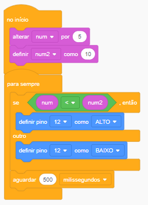
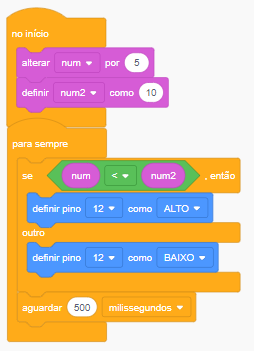

O que é C++ no Arduíno:
O Arduino utiliza uma linguagem de programação baseada em C++ com uma biblioteca chamada Wiring, que facilita a interação com os pinos de entrada/saída do microcontrolador.
Aqui estão algumas características principais:
Sintaxe Simplificada:
Embora seja baseado em C++, o ambiente Arduino simplifica a programação ao esconder muitos detalhes complexos, como a necessidade de definir funções "main()", permitindo que você foque mais no que o programa faz em vez de como configurá-lo.
Bibliotecas Pré-definidas:
O Arduino inclui bibliotecas que permitem interagir facilmente com sensores, motores e outros componentes eletrônicos sem precisar escrever código de baixo nível.
Funções Especiais:
Existem duas funções principais em qualquer programa Arduino, chamadas de setup() e loop():
setup(): Executada uma vez quando o Arduino é ligado, usada para inicializar variáveis, pinos e outras configurações.
loop(): Executada continuamente após o setup(), permitindo que o Arduino execute tarefas repetitivamente.
Hardware-Specific: Como o C++ para Arduino é focado no hardware, você usa funções e comandos específicos para controlar pinos (como digitalWrite(), analogRead(), etc.) que correspondem diretamente ao hardware do microcontrolador.
Resumindo, o Arduino utiliza uma versão simplificada do C++ para facilitar o desenvolvimento de projetos eletrônicos com microcontroladores.
Exemplos de código C++ no ide Arduíno e um exemplo código em blocos:
 
